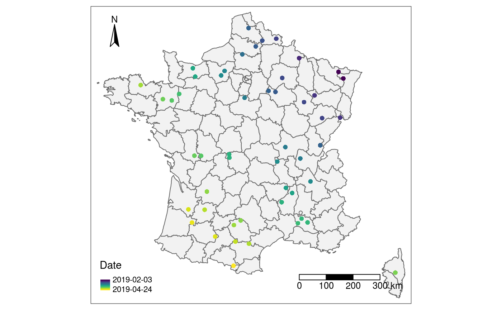
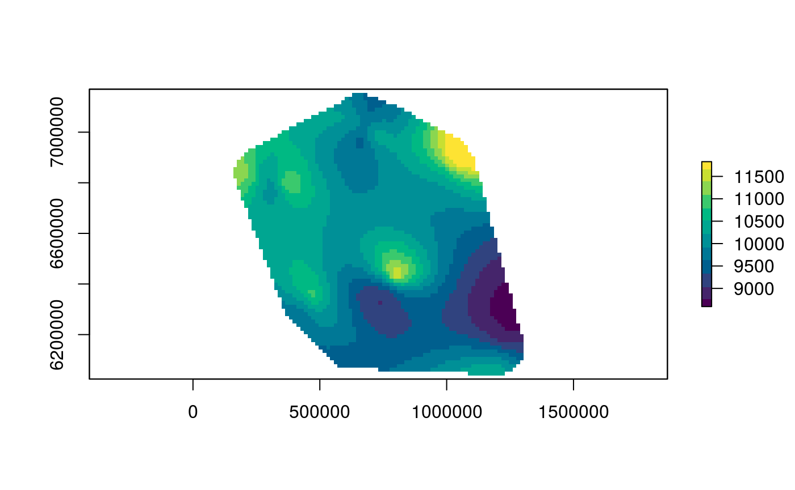
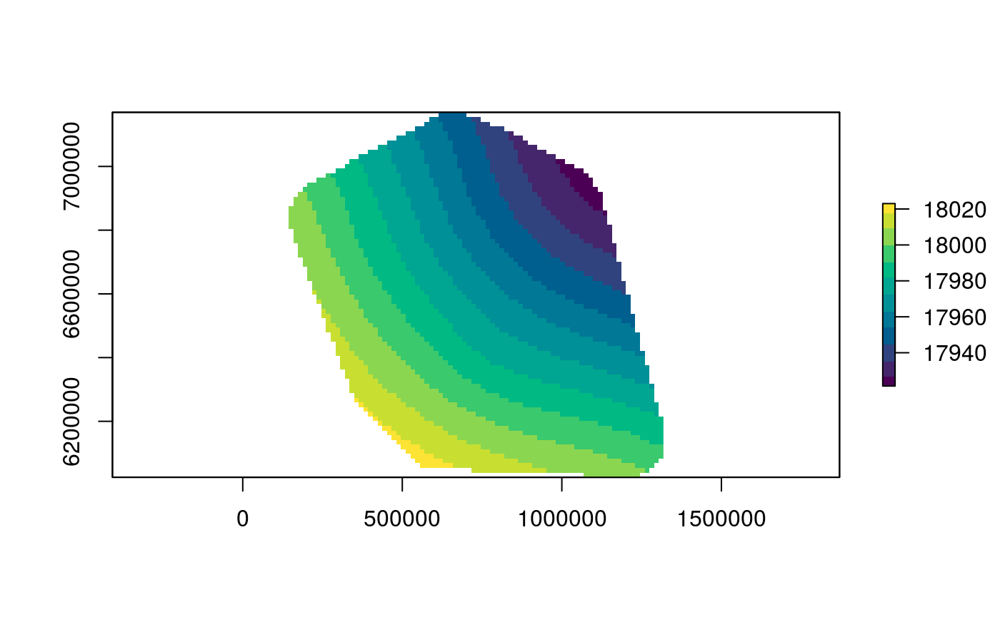

The goal of spreadrate is to estimate the local velocity of propagation of an epidemic event, given dates and locations of observed cases.
The method estimates the surface of first date of invasion by interpolation of the earliest observations in a neighbourhood and derives the local spread rate as the inverse slope of the surface.
Furthermore, it helps to quantify the estimation uncertainty by a Monte Carlo approach. Visualise and simulate the spatio-temporal progress of epidemics.
Installation
To install the latest version of spreadrate, copy and paste the following in a R session.
Example
Suppose that we have recorded the GPS coordinates and observation dates for all the observed cases of some emerging disease in mainland France into a table like this one.
#> # A tibble: 50 x 3
#> date Lon Lat
#> <date> <dbl> <dbl>
#> 1 2019-02-03 7.05 49.0
#> 2 2019-02-03 7.27 48.8
#> 3 2019-02-12 5.07 49.5
#> 4 2019-02-15 5.79 48.3
#> 5 2019-02-16 7.01 47.5
#> 6 2019-02-18 3.90 50.2
#> 7 2019-02-19 6.12 47.5
#> 8 2019-02-20 5.25 48.1
#> 9 2019-02-21 4.18 48.9
#> 10 2019-02-24 3.17 50.1
#> # … with 40 more rowsHere is a visual representation of these observed cases.

First let spreadrate interpret the observational data appropriately with the function sr_obs(). You need to specify the name of the temporal variable. Lon and Lat are recognised automatically.
However, spread-rate calculations require projected (rather than geographic) coordinates. An appropriate projection for mainland France is EPSG:2154. See https://epsg.io/.
Everything is now set to perform a default estimation of spread-rate.
sr_est <- sr(cases_sr)
#> Warning:
#> Grid searches over lambda (nugget and sill variances) with minima at the endpoints:
#> (GCV) Generalized Cross-Validation
#> minimum at right endpoint lambda = 1.377511e-05 (eff. df= 41.79999
#> )Done! Here is a quick plot of the estimated local spread-rate. The estimated velocity is practically constant, between 9 and 11 km / day.

This is consistent with the value of 10^{4} m/day used for simulating the data.
We can also retrieve the estimated surface of first-date of invasion:
